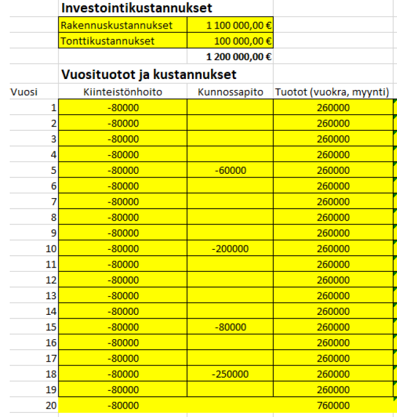
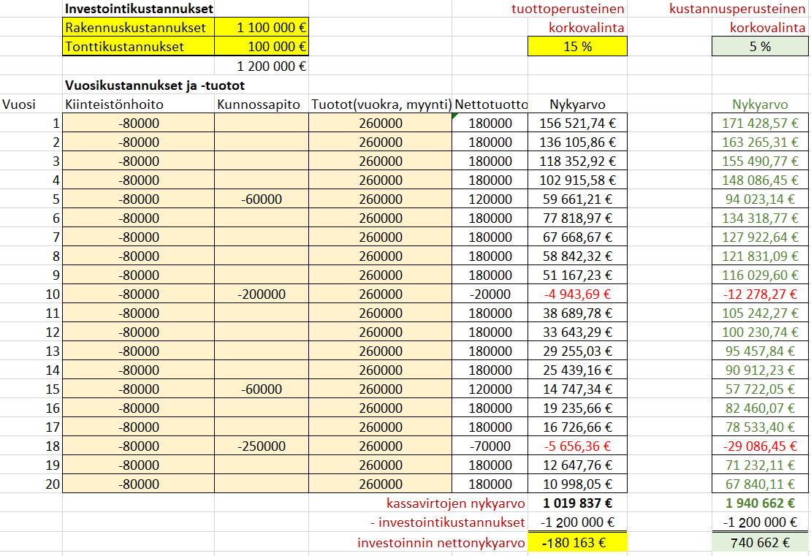
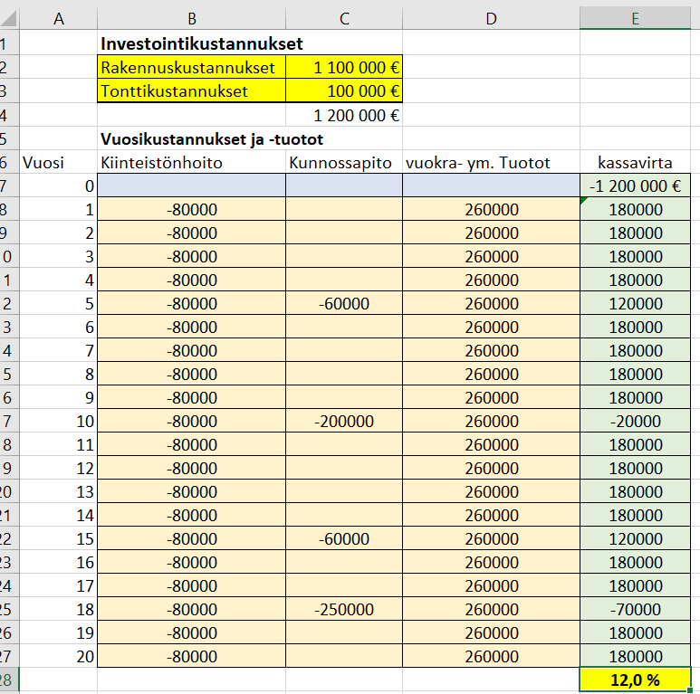

Elinkaarilaskennan menetelmiä
Contents
Elinkaarilaskennan menetelmiä¶
Elinkaarilaskennassa pyritään arvioimaan investoinnin kannattavuutta ja määrittelemään vuotuisen korvauksen suuruus ottaen huomioon kaikki kiinteistön elinkaaren aikaiset kustannukset.
Elinkaarilaskennassa käytetään seuraavia menetelmiä:
Nykyarvomenetelmä
Sisäisen koron menetelmä
Annuiteettimenetelmä (harvinainen)
Esimerkki, johon sovelletaan em. menetelmiä
Esimerkkinä on rakennusinvestointi, jossa investointikustannukset (sis. mm. rakennuskustannukset, tontti, liittymät) ovat yhteensä 1.2 milj. euroa. Pitoaika on 20 vuotta ja sen lopuksi arvioidaan rakennuksesta saatavan myyntituloa 0.5 miljoonaa euroa. Ao. taulukkoon on arvioitu vuotuiset menot (kiinteistönhoito ja kunnossapito), sekä tuotot koko pitoajalta. 
Nykyarvomenetelmä¶
Luodaan taulukon oikealle puolen uusi sarake, johon lasketaan summakaavalla kullekin vuodelle nettotuotto (ns. rahavirta)
Luodaan vielä toinen uusi sarake, johon lasketaan nettotuottojen nykyarvot käyttämällä edeltäkäsin määriteltyä diskonttokorkoa. Käytettävän korkokannan valinta voidaan tehdä kahdella tavalla
A. TUOTON NÄKÖKULMA. Siinä yritys määrittää tavoitekoron investoinnille. Pääomalla voi olla vaihtoehtoisia sijoituskohteita, joiden tuottoon korkoa verrataan. Koron määrityksessä tulee ottaa rahoituskustannusten lisäksi huomioon riski (esim. rakentaminen muuttotappioalueelle voi sisältää riskejä), sekä yrityksen tavoite investoinnista saatavalle voitolle. Tuottoperusteista korkoa käytettäessä investointi on kannattava, jos nettotuottojen nykyarvojen summa ylittää investoidun rahamäärän.
B. KUSTANNUSTEN NÄKÖKULMA. Tässä menetelmässä riittää, kun nykyarvon laskennassa käytettävä korko kattaa rahoituskustannukset, sekä riskit. Yrityksen tavoittelemaa voittoa ei korkoon sisällytetä. Voitto näkyy laskelmassa nettotuottojen nykyarvon ja investoidun summan erotuksena.
Tee esimerkin tapauksessa kannattavuuslaskelma nykyarvomenetelmällä käyttäen a) tuottoperustaista 15% korkokantaa, b) kustannusperustaista 5% korkoa.

Soluun E7 kirjoitetaan kaava \(\color{blue}{\text{=summa(B7:D7)}}\)
Soluun F7 kirjoitetaan kaava \(\color{blue}{\text{=-NA(\$F\$3;A7;;E7)}}\) 1),2)Molemmat kaavat kopioidaan alas
Soluun F27 kirjoitetaan kaava \(\color{blue}{\text{=summa(F7:F26)}}\) , joka laskee nykyarvojen summaksi n. 1.43 milj. euroa Soluun F28 kirjoitetaan investointikustannus \(\color{blue}{\text{-1 200 000}}\)
Soluun F29 kirjoitetaan investoinnin nettonykyarvon laskukaava \(\color{blue}{\text{+F27+F28}}\)
Johtopäätökset:
Kohdassa a) nettonykyarvo on 180 000 € negatiivinen => 15% tuottotavoite jää saavuttamatta ja jos sitä pidetään kannattavuusrajana, investointi ei ole kannattava
Kohdassa b) viivan alla jäävä 20 vuoden nettotuotto on nykyrahassa 750 000 €. Sen verran jää investoinnista käteen lainojen hoidon + riskivarausten 4.5 prosentin osuuden jälkeen). Ristiriitaa ei kuitenkaan ole a) -kohdan tuloksen kanssa, koska viivan alle jäävä tulos ei täytä 16% tuottotavoitetta.
1) englannikielisessä Excelissä nykyarvofunktio on PV
2) dollarimerkit Excelissä kiinnittävät soluviittauksen absoluuttiseksi
Sisäisen koron menetelmä¶
Sisäisen koron menetelmä (Internal Rate of Return method)
Sisäisen koron menetelmässä ei valita korkokantaa laskeman lähtökohdaksi, vaan menetelmä antaa tuloksenaan koron, jota käyttämällä nettotuottojen nykyarvojen summa täsmää investoidun rahamäärän kanssa.
Menetelmässä kannattaa käyttää Excelin IRR- funktiota. jonka ainoa argumentti on kassavirta, jossa 1. rivi sisältää investoidun rahamäärän miinusmerkkisenä, ja seuraavilla riveillä on vuotuiset nettotuotot.
Laske esimerkin investoinnin sisäinen korko.

Sisäisen koron menetelmässä on vain neljä saraketta, joista neljäs sisältää nettokassavirran kultakin vuodelta
Lisäksi taulukkoon tarvitaan investointivuodelle 0 oma rivi, jonka nettokassavirta on investoitu summa
Soluun E28 kirjoitetaan funktio \(\color{blue}{\text{=IRR(E7:E27)}}\), joka laskee sisäisen koron.
Johtopäätökset:
Investoinnin nettotuottoprosentti on 12%, joka ei yllä yrityksen itselleen asettamaan 15% kannattavuuskriteeriin..
Annuiteettimenetelmä on kolmas kustannuslaskennan menetelmä. Se on kyselyjen mukaan harvoin käytetty ja sen takia menetelmä kuitataan maininnalla useimmissa oppimateriaaleissa (mm. Aalto - yliopisto). Myöskään tällä kurssilla ei kyseistä menetelmää käsitellä.